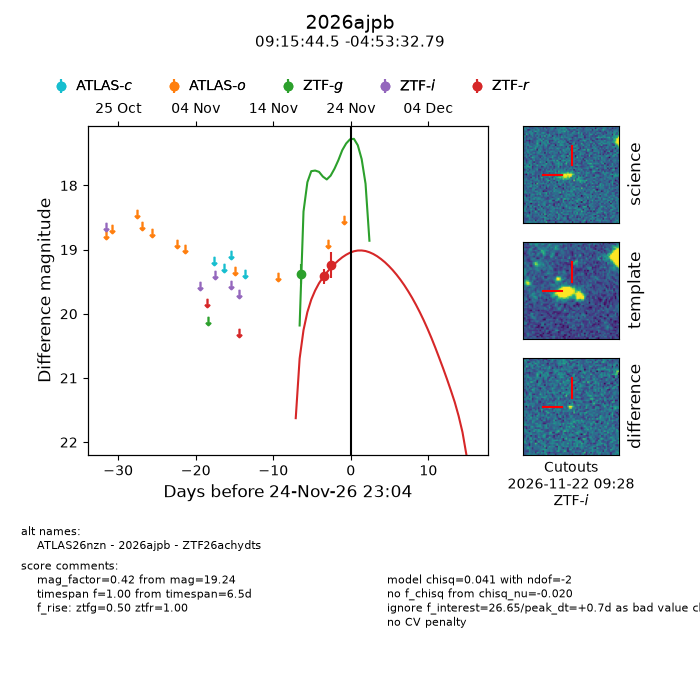
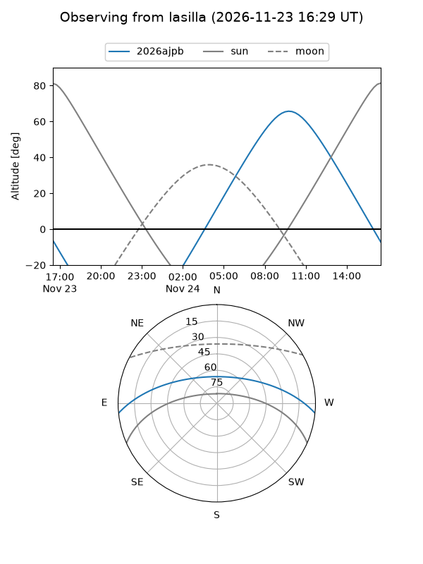
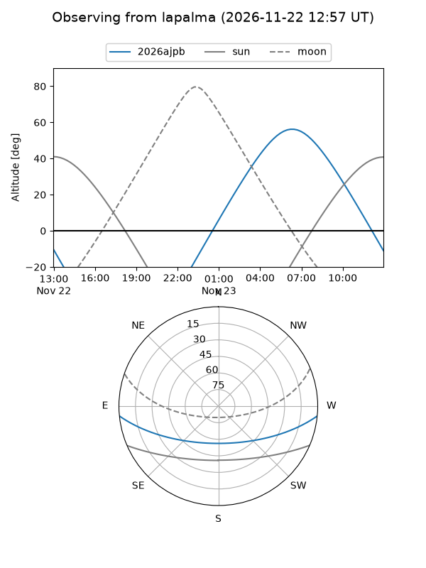
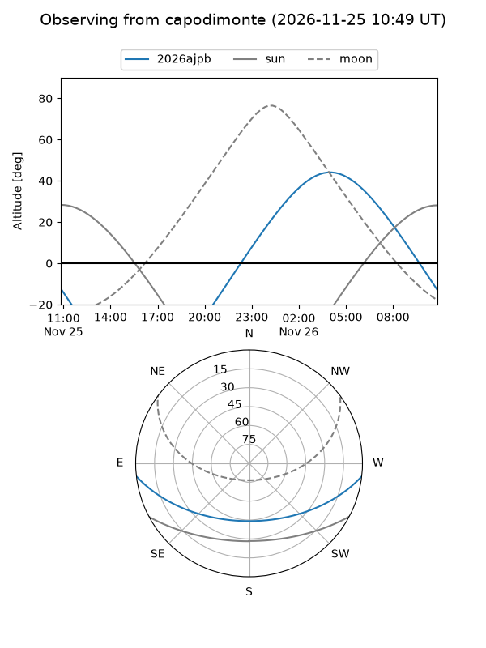
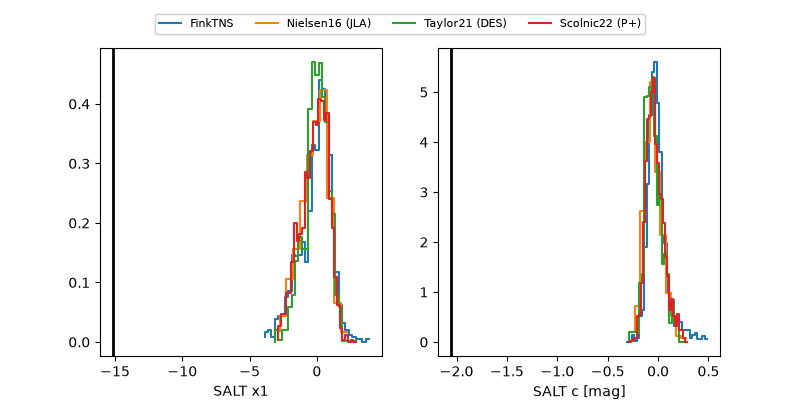

2026ajpb
Target 2026ajpb at 2026-11-24 23:06
Aliases and brokers:
FINK-ZTF: ztf.fink-portal.org/ZTF26achydts
Lasair-ZTF: lasair-ztf.lsst.ac.uk/objects/ZTF26achydts
ALeRCE-ZTF: alerce.online/object/ZTF26achydts
YSE-PZ: ziggy.ucolick.org/yse/transient_detail/2026ajpb
TNS name: wis-tns.org/object/2026ajpb
Direct TNS query: direct search
alt names
ZTF26achydts (ztf,fink_ztf)
2026ajpb (tns,yse)
ATLAS26nzn (atlas)
Coordinates:
equatorial (ra, dec) = 138.9352,-4.89244
equatorial (HMS+DMS) = 09:15:44.45,-04:53:32.79
galactic (l, b) = (236.0286,+28.89951)
Flags:
peak dt: +0.7
Photometry:
last ztfg=19.38, ztfr=19.24
1 ztfg, 2 ztfr detections
Lightcurve

Visibility



Additional plots
